|
夕涼みチャットの記録 |
|
||
|
夕涼みチャットの記録 |
|
||
|
２０１０年７月２４日（土） ２１：００〜２３：００に、『夕涼みチャット』を開催しました。今年はいろいろ忙しくてこれが今年第１回目のチャットとなりましたが、今回は参加者がとても多くてすごく盛り上がりました！ チャットを行うたびに、ミルモはまだまだ人気なんだなと思います。 それではその夕涼みチャットの模様をダイジェストでお伝えします。
(2010/7/25) |
|||
↓今回も開始後わずか数分でたくさんの参加者が集まりました！
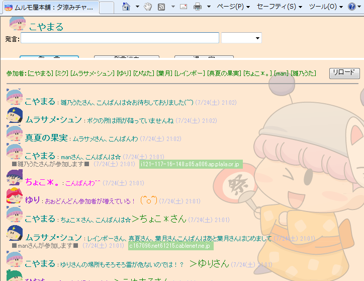
↓まずは最近のミルモ活動を皆さんに質問しました。
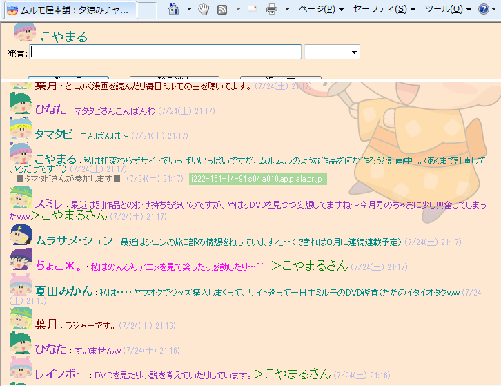
↓レインボーさんからの質問で、「最近ハマっているゲームは？」
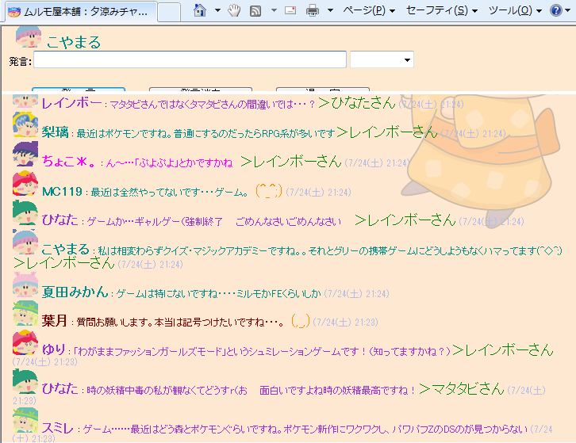
↓時の妖精談義がとても熱かった！
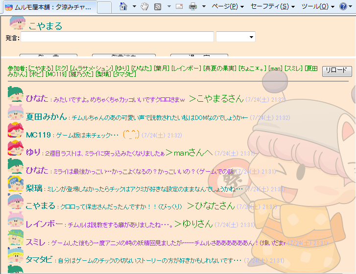
↓「なりきりチャット」の時間となりました。まずは早い者勝ちでキャスト募集〜。
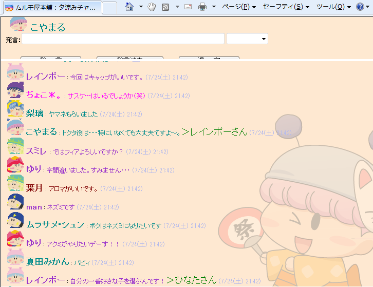
今回は妖精忍者全員参加と豪華な顔ぶれですね(^^)。
|
★出演者紹介（五十音順）★ アクミ（ゆりさん） |
↓いよいよなりきりチャットのスタート！
今回はドクタ博士の開発したタイムマシーンがスタート地点です。
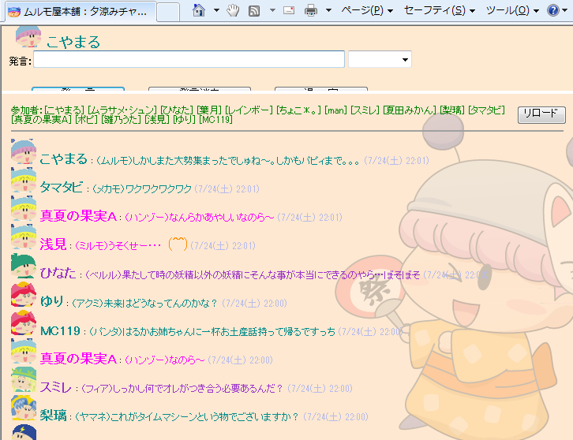
|
〜今回のなりきりチャットのテーマ〜 ドクタ博士の開発したタイムマシーンで妖精たちは５年後の妖精界へ ５年後の設定 |
↓タイムマシーンの起動ボタンを誰が押すかで大混乱。
結局気がつけばパピィが押していました(笑)
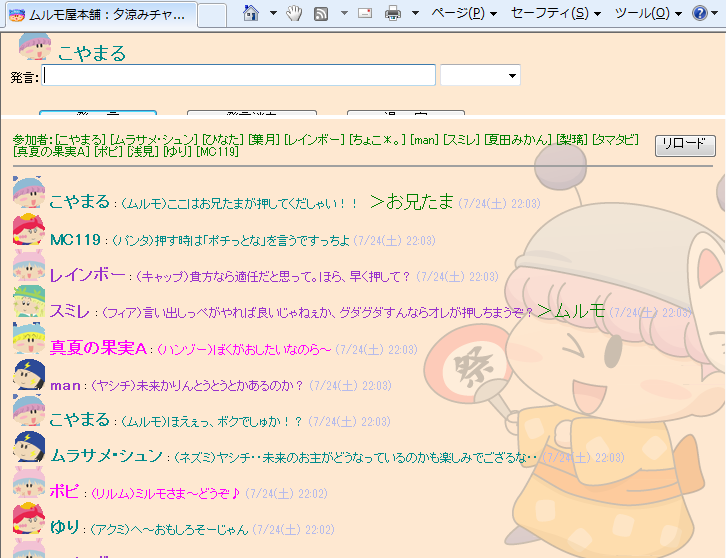
↓５年後の妖精界で最初に見たのは、うかない表情をしているミルモでした
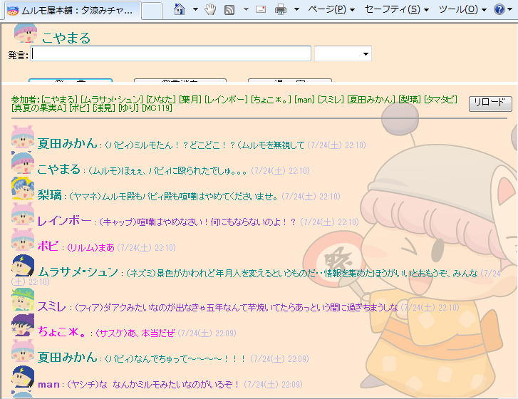
↓５年後の妖精界は何やら大変なことに！！
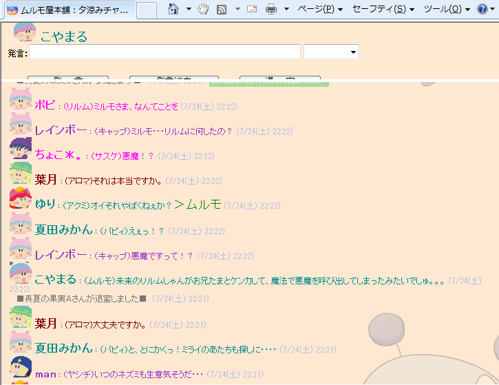
↓みんなで力を合わせて悪魔退治！（ここで終了^^;）
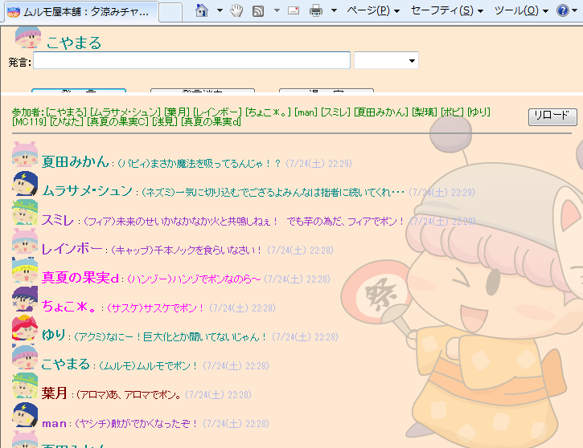
↓今回のなりきりチャットの反省会〜
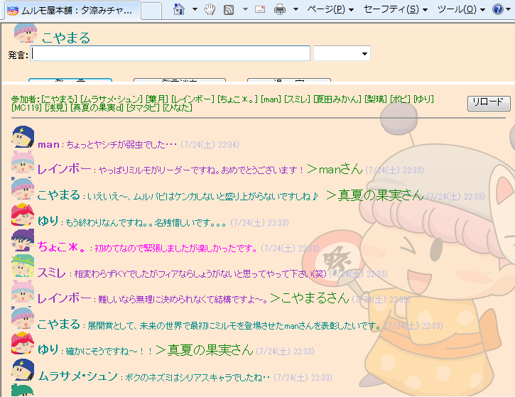
↓最後は皆さんの今ハマっているものを質問しました
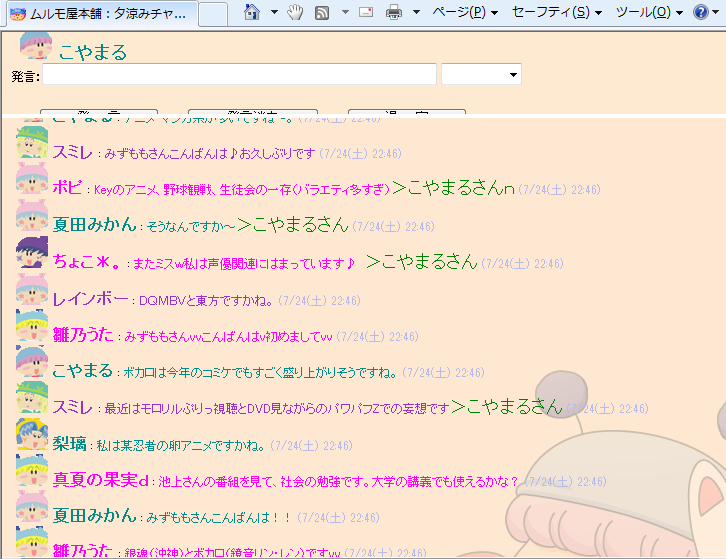
皆さんのお力により、今回もとても楽しいチャット会となりました。
次回は秋を予定していますので、またぜひお気軽に参加してくださいね。
 |